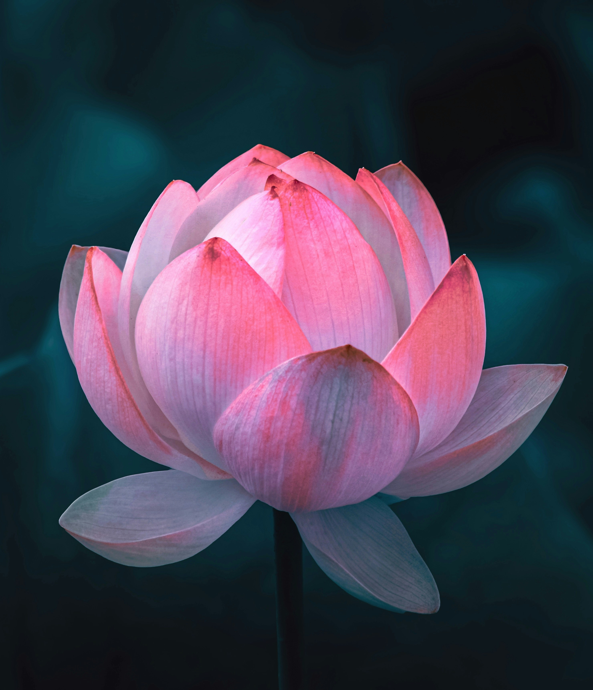

Indias state flower
In India the lotus flower is their national flower and it holds a huge spiritually importance. Most of the lotus flowers is either pink or white, but they can also be blue, purple and yellow. It is Indias national flower because it symbolizes purity, beauty, wealth and spirituality. The plant is often known for its beauty
